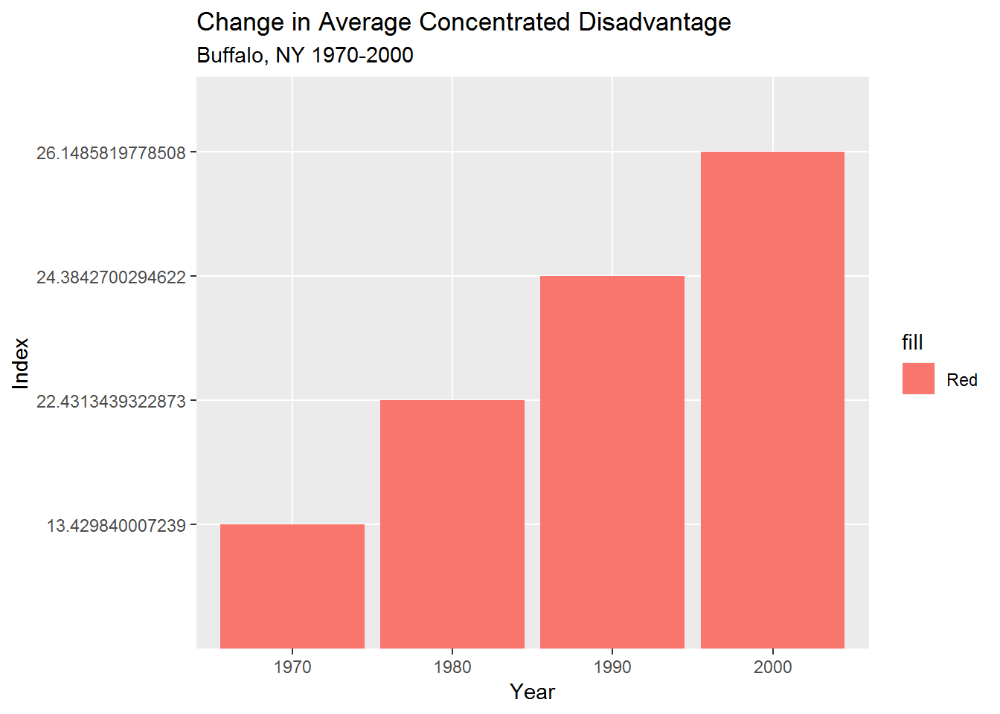
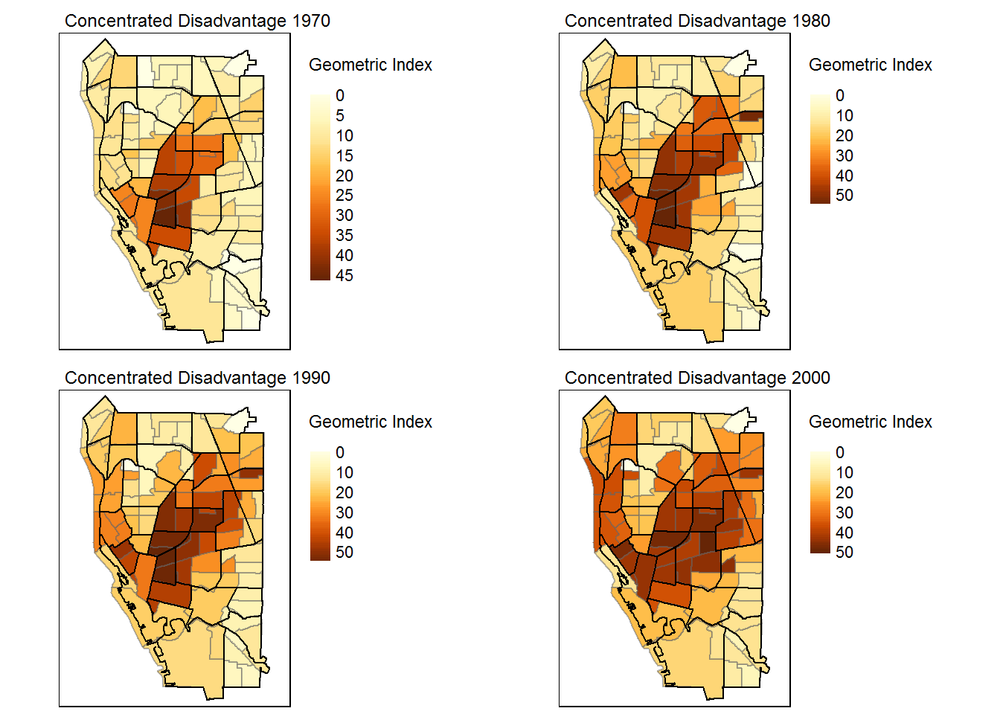

In September of 2017, the city of Buffalo announced the reassessment of over 95,000 properties, which will be the first reassessment done since 2010. Officials say, “The purpose of a property reassessment is to establish uniform, fair, and equitable assessments on all real property types” (Slawson, 2017). The total assessment value of each residential tax parcel often determines how much a homeowner pays in property taxes each year, thus contributes to the development of city infrastructure. In recent years, some residential tax parcels have sold for much more than the assessed value, and are located in neighborhoods where revitalization efforts have taken place. The problem is that in some neighborhoods “property values have shot up so drastically that some homeowners are facing 30% tax increases, or more, compared to when they purchased their affordable homes a decade ago” (Buffalo Rising, 2018).
In recent years, some neighborhoods in Buffalo, NY have experienced a substantial increase in the prosperity of the population, others, however, experienced increasing levels of concentrated disadvantage. Here, I use the definition of gentrification given by The Encyclopedia of Housing as “the process by which central urban neighborhoods that have undergone disinvestments and economic decline experience a reversal, reinvestment, and the in-migration of a relatively well-off, middle- and upper middle class population” (Freeman, 2080). Gentrification can displace marginalized populations and most literature document that residential displacement results from increasing rent prices and or home values, no longer affordable for the residing population prior to neighborhood revitalization (LeGates & Hartman 32).
Gentrification is the process by which central urban neighborhoods that have undergone disinvestments and economic decline experience a reversal, reinvestment, and the in-migration of a relatively well-off, middle- and upper middle class population. ~ The Encyclopedia of Housing
Despite the growing demand for up-to-date data that could provide insight into mitigation strategies for the negative consequences of gentrification, only a few studies “attempt to measure gentrification systematically or document the extent and the form of displacement due to gentrification” (Holm & Schulz, 251). Traditional methods of measuring gentrification rely heavily on census data and analyzing key indicators of neighborhood change, such as increasing percentage of white population, higher incomes, and rising rents (Heidkamp & Lucas, 104). This methodology is not able to analyze changing neighborhood dynamics in close-to-real time due to the infrequency of community surveys and the year lag time in results. In addition, as the geographic unit gets smaller, accuracy of the data also diminishes due to higher margins of error, thus blurring both perceived and established neighborhood boundaries in the dynamics of the change. New methods of quantifying changing cities are arising with the “emerging cloud of Big Data” that prove useful to supplement traditional methods to measure gentrification and displacement (Zook et al.) Open data portals provided by local government agencies are also incredibly valuable. These publically available datasets can provide useful information on neighborhood change at the household level.
The purpose of this project is to use the city of Buffalo’s Open Data Portal to analyze, visualize, and quantify gentrification based on the sold price of residential tax parcels above the total assessment value, and understand which changing socioeconomic variables play a role in the sale price of residential parcels over its assessed value. Very little academic literature discusses and analyses gentrification in Rust-Belt cities, but what exists says; “In Rust Belt cities like Buffalo, the [displacement] trend plays out differently than in booming coastal cities like San Francisco and New York. But for all these urban centers, increased public and private investment in downtown neighborhoods combined with changing cultural preferences toward urban lifestyles are changing the fabric of these cities in ways scarcely imagined a decade or two ago” (Sherman, 3). Quantifying displacement is problematic due to “lacking the ability to track ‘displacees’” (Atkinson, 149), which happens when data is not available at the individual level to understand migration patterns. Therefore, this project does not empirically analyze displacement, rather, it combines available tax parcel assessment and census data to analyze gentrification, then maps populations that are at the greatest risk of displacement based on potentially rising property taxes due to the city of Buffalo’s reassessment project.
In Rust Belt cities like Buffalo, the [displacement] trend plays out differently than in booming coastal cities like San Francisco and New York. But for all these urban centers, increased public and private investment in downtown neighborhoods combined with changing cultural preferences toward urban lifestyles are changing the fabric of these cities in ways scarcely imagined a decade or two ago. ~ Danya Sherman
-Decline70_00.csv
-Source: U.S. Census Tiger Data
-Source: Open data Buffalo Portal
In order to properly quantify gentrification, it is necessary to measure urban decline and concentrated disadvantage within the city historically. “By definition, gentrification is reinvestment in and rebuilding of the physical structures that have undergone a period of disinvestment” (Heidkamp & Lucas, 107). Neighborhoods that experience a period of disinvesment are often concentrated in disadvantage. Circumstances that make success (most often economically) unusually difficult make places disadvantaged, and “the presence of disadvantage weakens a place’s ability to achieve this goal [economic success]” (Weaver et al, 35). When multiple layers of disadvantage occur in a single location, concentrated disadvantage exists (36). By using the geometric mean of five disadvantage variables provided by the NCDB, I calculate concentrate disadvantage (CD) for the years 1970-2000. I use the same variables used by Weaver et al, 2017 in my calculations because all variables are represented as percentages, thus making comparisons across time consistent as they range from a value of 0-100. The equation can be represented as:
Gi = [(PercentNonwhitei)*(PercentFemaleHeadedHouseholdsi)*(PercentUnemployedi)*(PercentinPovertyi)*(PercentLowEducationi)]1/5, i : 1, 2, …, n
#load all necessary libraries for analysis
library(dplyr)
library(tidyverse)
library(ggplot2)
library(tmap)
library(broom)
library(ggmap)
library(sp)
library(sf)
library(reshape2)# For reproducability, set working directory to the data folder of your cloned/downloaded file
decline <- read.csv("Data/Decline70_00.csv")
#Select attributes relevant to 1970 concentrated disadvantage
index70 <- select(decline, GeoID, Pop_70, PerWhite_70, PerFHH_70, Edu08_70, Edu812_70, X25Pop_70, PerPov_70, PerUnEmp_70)
# Create new columns for percent nonwhite and percent undereducated
geoindex70 <- mutate(index70,
PerLowEdu70 = (Edu08_70 + Edu812_70)/X25Pop_70,
PerNonWhite70 = 1 - PerWhite_70)
# Calculate the geometric index of concentrated disadvantage in 1970
disadvantage70 <- mutate(geoindex70,
index_70 = (PerNonWhite70 * PerFHH_70 * PerUnEmp_70 * PerPov_70 * PerLowEdu70)^(1/5)*100)
# Create new df only the GeoID and the geometric index of concentrated disadvantage for joining and mapping later
conDis_1970 <- select(disadvantage70, GeoID, index_70)
# Make sure it worked
head(conDis_1970)## GeoID index_70
## 1 3.6029e+10 11.053955
## 2 3.6029e+10 5.541302
## 3 3.6029e+10 11.448516
## 4 3.6029e+10 4.488601
## 5 3.6029e+10 0.000000
## 6 3.6029e+10 3.881401Repeat steps for 1980, 1990, and 2000
# 1980
index80 <- select(decline, GeoID, Pop_80, PerWhite_80, PerFHH_80, Edu08_80, Edu812_80, X25pop_80, PerPov_80, PerUnemp_80)
geoindex80 <- mutate(index80,
PerLowEdu80 = (Edu08_80 + Edu812_80)/X25pop_80,
PerNonWhite80 = 1 - PerWhite_80)
disadvantage80 <- mutate(geoindex80,
index_80 = (PerNonWhite80 * PerFHH_80 * PerUnemp_80 * PerPov_80 * PerLowEdu80)^(1/5)*100)
conDis_1980 <- select(disadvantage80, GeoID, index_80)
#1990
index90 <- select(decline, GeoID, Pop_90, PerWhite_90, PerFH_90, Edu08_90, Edu812_90, X25pop_90, PovPer_90, PerUnEmp_90)
geoindex90 <- mutate(index90,
PerLowEdu90 = (Edu08_90 + Edu812_90)/X25pop_90,
PerNonWhite90 = 1 - PerWhite_90)
disadvantage90 <- mutate(geoindex90,
index_90 = (PerNonWhite90 * PerFH_90 * PerUnEmp_90 * PovPer_90 * PerLowEdu90)^(1/5)*100)
conDis_1990 <- select(disadvantage90, GeoID, index_90)
# 2000
index00 <- select(decline, GeoID, Pop_00, PerWhite_90.1, PerFHH_00, Edu08_00, Edu812_00, X25Pop_00, PerPov_00, PerUnEmp_00)
geoindex00 <- mutate(index00,
PerLowEdu00 = (Edu08_00 + Edu812_00)/X25Pop_00,
PerNonWhite00 = 1 - PerWhite_90.1)
disadvantage00 <- mutate(geoindex00,
index_00 = (PerNonWhite00 * PerFHH_00 * PerUnEmp_00 * PerPov_00 * PerLowEdu00)^(1/5)*100)
conDis_2000 <- select(disadvantage00, GeoID, index_00)Join all of the conDis_“year” dataframes so there is just one clean file for mapping
conDis_70_80 <- full_join(conDis_1970, conDis_1980, "GeoID", "GeoID")
conDis_70_80_90 <- full_join(conDis_70_80, conDis_1990, "GeoID", "GeoID")
conDis_1970_to_2000 <- full_join(conDis_70_80_90, conDis_2000, "GeoID", "GeoID")
#Make sure it worked
head(conDis_1970_to_2000)## GeoID index_70 index_80 index_90 index_00
## 1 3.6029e+10 11.053955 18.825152 16.207404 15.129652
## 2 3.6029e+10 5.541302 14.155308 16.729068 12.665927
## 3 3.6029e+10 11.448516 18.217041 19.052387 19.859068
## 4 3.6029e+10 4.488601 8.513636 6.340130 9.727399
## 5 3.6029e+10 0.000000 3.069325 5.860574 6.924474
## 6 3.6029e+10 3.881401 8.521317 8.623177 11.286938Join the Concentrated Disadvantage Data with the Spatial Polygon Data to map and caluculate summary values based off of only City of Buffalo census tracts instead of all of erie county
buffalo_tracts <- st_read("Data/Buffalo.shp") #read in shapefile## Reading layer `Buffalo' from data source `C:\Users\Leigh\Desktop\Spatial Data Science\geo503-2018-finalproject-Nino-Martinez\Data\Buffalo.shp' using driver `ESRI Shapefile'
## Simple feature collection with 79 features and 12 fields
## geometry type: POLYGON
## dimension: XY
## bbox: xmin: -78.91425 ymin: 42.82602 xmax: -78.79516 ymax: 42.96646
## epsg (SRID): 4269
## proj4string: +proj=longlat +datum=NAD83 +no_defsconDis_1970_to_2000$GeoID <- as.character(conDis_1970_to_2000$GeoID) #Change factor to character to join
Buffalo_ConDis <- full_join(buffalo_tracts, conDis_1970_to_2000, by = c("GEOID10" = "GeoID"))
head(Buffalo_ConDis)## Simple feature collection with 6 features and 16 fields
## geometry type: POLYGON
## dimension: XY
## bbox: xmin: -78.91425 ymin: 42.92218 xmax: -78.84816 ymax: 42.96126
## epsg (SRID): 4269
## proj4string: +proj=longlat +datum=NAD83 +no_defs
## STATEFP10 COUNTYFP10 TRACTCE10 GEOID10 NAME10 NAMELSAD10
## 1 36 029 005300 36029005300 53 Census Tract 53
## 2 36 029 005400 36029005400 54 Census Tract 54
## 3 36 029 005500 36029005500 55 Census Tract 55
## 4 36 029 005600 36029005600 56 Census Tract 56
## 5 36 029 005700 36029005700 57 Census Tract 57
## 6 36 029 005900 36029005900 59 Census Tract 59
## MTFCC10 FUNCSTAT10 ALAND10 AWATER10 INTPTLAT10 INTPTLON10 index_70
## 1 G5020 S 2312977 5623 +42.9293726 -078.8597263 6.188326
## 2 G5020 S 1824964 105583 +42.9379527 -078.8681782 5.916014
## 3 G5020 S 1551922 0 +42.9389099 -078.8889077 9.199522
## 4 G5020 S 2198732 0 +42.9511733 -078.8866130 14.002677
## 5 G5020 S 956845 0 +42.9497231 -078.8992508 13.834880
## 6 G5020 S 1218299 298165 +42.9373135 -078.9031215 9.405198
## index_80 index_90 index_00 geometry
## 1 12.94891 23.317384 30.975091 POLYGON ((-78.85173 42.9274...
## 2 9.10364 7.239877 9.040853 POLYGON ((-78.87817 42.9360...
## 3 12.47494 19.763139 25.604086 POLYGON ((-78.87819 42.9363...
## 4 22.04577 23.613947 29.162020 POLYGON ((-78.89561 42.9463...
## 5 16.73563 18.073085 22.742578 POLYGON ((-78.89683 42.9443...
## 6 18.88942 19.490110 23.120596 POLYGON ((-78.90468 42.9334...conDis_70_mean <- mean(Buffalo_ConDis$index_70)
conDis_80_mean <- mean(Buffalo_ConDis$index_80)
conDis_90_mean <- mean(Buffalo_ConDis$index_90)
conDis_00_mean <- mean(Buffalo_ConDis$index_00)
# Calculate the median
conDis_70_median <- median(Buffalo_ConDis$index_70)
conDis_80_median <- median(Buffalo_ConDis$index_80)
conDis_90_median <- median(Buffalo_ConDis$index_90)
conDis_00_median <- median(Buffalo_ConDis$index_00)
# Create a matrices to plot the change in mean concenctrated disadvantage over time
conDis_matrix <- matrix(nrow = 4, ncol = 3, c("1970","1980","1990","2000",conDis_70_mean,conDis_80_mean, conDis_90_mean,conDis_00_mean,conDis_70_median,conDis_80_median, conDis_90_median,conDis_00_median))
colnames(conDis_matrix) <- c("Year", "Mean_Index", "Median_Index" )
#Convert to dataframe for plotting
conDis_df <- as.data.frame(conDis_matrix)
# Spread data to show mean and median in bar chart
conDis_df.2 <- melt(conDis_df, id.vars='Year')
conDis_df.2## Year variable value
## 1 1970 Mean_Index 13.429840007239
## 2 1980 Mean_Index 22.4313439322873
## 3 1990 Mean_Index 24.3842700294622
## 4 2000 Mean_Index 26.1485819778508
## 5 1970 Median_Index 9.80366192797367
## 6 1980 Median_Index 18.0077310376496
## 7 1990 Median_Index 20.7398394621094
## 8 2000 Median_Index 24.6919888500139# Change class of value attribute
conDis_df.2$value <- as.numeric(as.character(conDis_df.2$value))
conDis_plot <- ggplot(data = conDis_df.2, aes(x = Year, y = value, fill = variable)) + geom_bar(stat = "identity", position = "dodge") + ggtitle("Change in Mean and Median Concentrated Disadvantage (CD)", "Buffalo NY 1970-2000 ") + labs(x = "Year", y = "Geometric Index")
conDis_plot
From 1970 to 2000, both the average and median geometric index of concentrated disadvantage (CD) nearly doubled, with the most dramatic increase being between the 1970 and 1980. While this shows that disadvantage increased in the city as a whole, it is necessary to analyse the spatial distribution of CD over time within the city as a precursour to the analysis of gentrification. Using the ‘tmap’ package and the function tmap_arrange, we can evaluate the extent of dispersion in CD.
# read in neighborhood shapefile
neighborhoods <- st_read("Data/nbhds.shp")## Reading layer `nbhds' from data source `C:\Users\Leigh\Desktop\Spatial Data Science\geo503-2018-finalproject-Nino-Martinez\Data\nbhds.shp' using driver `ESRI Shapefile'
## Simple feature collection with 35 features and 11 fields
## geometry type: POLYGON
## dimension: XY
## bbox: xmin: -78.91246 ymin: 42.82603 xmax: -78.79504 ymax: 42.96641
## epsg (SRID): 4326
## proj4string: +proj=longlat +datum=WGS84 +no_defsCD_70_map <- tm_shape(Buffalo_ConDis) + tm_polygons("index_70", style = "cont",
palette = "seq",
n = 7,
title = "Geometric Index",
border.alpha = .50) +
tm_shape(neighborhoods) + tm_polygons(alpha = 0, border.col = "black") +
tm_layout(aes.palette = "Reds", legend.outside = TRUE, main.title = "Concentrated Disadvantage 1970", main.title.size = .75)
CD_80_map <- tm_shape(Buffalo_ConDis) + tm_polygons("index_80", style = "cont",
palette = "seq",
n = 7,
title = "Geometric Index",
border.alpha = .50) +
tm_shape(neighborhoods) + tm_polygons(alpha = 0, border.col = "black") +
tm_layout(aes.palette = "Reds", legend.outside = TRUE, main.title = "Concentrated Disadvantage 1980", main.title.size = .75)
CD_90_map <- tm_shape(Buffalo_ConDis) + tm_polygons("index_90", style = "cont",
palette = "seq",
n = 7,
title = "Geometric Index",
border.alpha = .50) +
tm_shape(neighborhoods) + tm_polygons(alpha = 0, border.col = "black") +
tm_layout(aes.palette = "Reds", legend.outside = TRUE, main.title = "Concentrated Disadvantage 1990", main.title.size = .75)
CD_00_map <- tm_shape(Buffalo_ConDis) + tm_polygons("index_00", style = "cont",
palette = "seq",
n = 7,
title = "Geometric Index",
border.alpha = .50) +
tm_shape(neighborhoods) + tm_polygons(alpha = 0, border.col = "black") +
tm_layout(aes.palette = "Reds", legend.outside = TRUE, main.title = "Concentrated Disadvantage 2000", main.title.size = .75)
tmap_arrange(nrow = 2, CD_70_map, CD_80_map, CD_90_map, CD_00_map)
CD from 1970 to 2000 spread in an intriguing way, with persistent high indices of disadvantage in the central business district (CBD) and expaning out to the city border on the east and west parts of Buffalo, with compariably low indices in census tracts directly North of the CBD. With the historical context in mind, I evaluate disinvested tracts as any tracts whose geometric index of CD is equal to or greater than the median (CD) of all tracts in the year 2000.
conDis_00_median## [1] 24.69199Using the R packages “leaflet”, “rgdal”, “geojsonio”, and “rmapshaper”, I created an interactive map that allows users to explore the census tracts within neighborhood boundaries with high levels of CD in order to set the criteria for measuring gentrification.
# Load necessary packages
library(sp)
library(sf)
library(rgdal)
library(spdplyr)
library(geojsonio)
library(rmapshaper)
library(leaflet)
# Convert sf to sp in order to convert to geojson for interactive mapping with leaflet
Buffalo_ConDis_sp <- as(Buffalo_ConDis, "Spatial") # Concentrated Disadvantage
neighborhoods_sp <- as(neighborhoods, "Spatial") # Neighborhood Boundaries
# Convert to geojson
buffalo_cd_json <- geojson_json(Buffalo_ConDis_sp)
neighborhoods_json <- geojson_json(neighborhoods_sp)
# Simplify the geometry to decrease storage size of spatial object
buffalo_cd_json_simp <- ms_simplify(buffalo_cd_json)
neighborhoods_json_simp <- ms_simplify(neighborhoods_json)
# Write as a geojson to bring back into R for mapping
geojson_write(buffalo_cd_json_simp, file = "city_CD.geojson")## <geojson-file>
## Path: city_CD.geojson
## From class: jsongeojson_write(neighborhoods_json_simp, file = "neighborhoods.geojson")## <geojson-file>
## Path: neighborhoods.geojson
## From class: json# Read in .geojson to map
city_CD <- geojson_read("city_CD.geojson", what = "sp")
nbhds_json <- geojson_read("neighborhoods.geojson", what = "sp")
# Map for interactive view of concentrated disadvantage
bins <- c(0, 8, 16,24.7, 33, 41, 50.4) # Sets the interval for color scheme
pal_00 <- colorBin("YlOrRd", domain = city_CD$index_00, bins = bins) # Gives seqential color scheme
# Created html popup of index of concentrated disadvantage
labels_00 <- sprintf(
"<strong>%g index of CD</strong>",
city_CD$index_00
) %>% lapply(htmltools::HTML)
# Create leaflet map to label by geometric index
CD_Map_2000 <- leaflet() %>% setView(-78.8784, 42.8864, 10.9) %>% addTiles() %>%
addPolygons(data = nbhds_json, fillOpacity = 0, weight = 3, opacity = 1) %>%
addPolygons(data = city_CD, fillColor = ~pal_00(index_00),
weight = 0.5,
opacity = 0.5,
color = "white",
dashArray = "3",
fillOpacity = 0.5,
highlight = highlightOptions(
weight = 5,
color = "#666",
dashArray = "",
fillOpacity = 0.5,
bringToFront = TRUE),
label = labels_00,
labelOptions = labelOptions(
style = list("font-weight" = "normal", padding = "3px 8px"),
textsize = "15px",
direction = "auto"))
# Create leaflet map to label by neighborhood
CD_nbhd_2000 <- leaflet() %>% setView(-78.8784, 42.8864, 10.7) %>% addTiles() %>%
addPolygons(data = city_CD, fillColor = ~pal_00(index_00),
weight = 2,
opacity = 1,
color = "white",
dashArray = "3",
fillOpacity = 0.5) %>%
addPolygons(data = nbhds_json, fillOpacity = 0, weight = 1.2,
label = nbhds_json$nbhdname) %>%
addLegend(pal = pal_00, values = city_CD$index_00, opacity = 0.5, title = "Concentrated Disadvantage (%)",
position = "bottomleft")CD_Map_2000CD_nbhd_2000
While traditional methods of measuring gentrification rely heavily upon the use of analyzing key indicators of gentrification, such as increasing percentage of white population, higher incomes, and rents (Heidkamp & Lucas, 104). This methodology is not able to analyze changing neighborhood dynamics in close-to-real time due to the infrequency of community surveys and the year lag time of results. In addition, as the geographic unit gets smaller, accuracy of the data also diminishes due to higher margins of error, thus blurring both perceived and established neighborhood boundaries as well as the dynamics of change. New methods of quantifying changing cities arose from the “emerging cloud of Big Data”, and prove useful to supplement traditional methods of measuring gentrification and displacement (Zook et al., 2). Open data portals provided by local government agencies are also incredibly valuable. These publically available datasets can provide useful information on neighborhood change at the individual level.
In order to measure gentrification, I analyse changes in key variables provided by the U.S. Census Bureau that are used consistently in academic literature (Atkinson 2000, Heidcamp & Lucas 2006, Freeman & Braconi 2004, Holm & Schulz 2017). These variables come from the U.S. Census Bureau’s American Community Survey 5-year estimates. I examine change from the 2010 (2006-2010 estimates) and 2016 (2012-2016 estimates). This process involves a lot of data transformation in RStudio, I chose not to use the R package “tidyverse” due to the specific variables needed for analysis and the lack of variable full descriptions within the package. I instead download the required datasets from the US Census Bureau factfinder, and use the meta data to then filter the data by columns for variable selection. Due to the time involved in filtering the data by the metadata, I select variables of interest for future research in addition to the variables for this project alone.
# Read in all economic variables for 2010
economic_10 <- read.csv("Data/economic_10.csv", skip = 1)
#Filter variables by column number based on metadata
key_economic_10 <- economic_10[,c(2,3,38, 39, 86, 87, 110, 111, 248, 249, 204, 205, 478:479)]
# Make sure the column names are selected correctly
colnames(key_economic_10)## [1] "Id2"
## [2] "Geography"
## [3] "Percent..EMPLOYMENT.STATUS...Percent.Unemployed"
## [4] "Percent.Margin.of.Error..EMPLOYMENT.STATUS...Percent.Unemployed"
## [5] "Percent..COMMUTING.TO.WORK...Public.transportation..excluding.taxicab."
## [6] "Percent.Margin.of.Error..COMMUTING.TO.WORK...Public.transportation..excluding.taxicab."
## [7] "Percent..OCCUPATION...Management..business..science..and.arts.occupations"
## [8] "Percent.Margin.of.Error..OCCUPATION...Management..business..science..and.arts.occupations"
## [9] "Estimate..INCOME.AND.BENEFITS..IN.2010.INFLATION.ADJUSTED.DOLLARS....Median.household.income..dollars."
## [10] "Estimate.Margin.of.Error..INCOME.AND.BENEFITS..IN.2010.INFLATION.ADJUSTED.DOLLARS....Median.household.income..dollars."
## [11] "Estimate..INCOME.AND.BENEFITS..IN.2010.INFLATION.ADJUSTED.DOLLARS....Total.households"
## [12] "Estimate.Margin.of.Error..INCOME.AND.BENEFITS..IN.2010.INFLATION.ADJUSTED.DOLLARS....Total.households"
## [13] "Percent..PERCENTAGE.OF.FAMILIES.AND.PEOPLE.WHOSE.INCOME.IN.THE.PAST.12.MONTHS.IS.BELOW.THE.POVERTY.LEVEL...All.families"
## [14] "Percent.Margin.of.Error..PERCENTAGE.OF.FAMILIES.AND.PEOPLE.WHOSE.INCOME.IN.THE.PAST.12.MONTHS.IS.BELOW.THE.POVERTY.LEVEL...All.families"# Create vector for new column names
economic_names_10 <- c("GEOID10",
"Census_Tract",
"Per_Unemp10",
"Per_Unemp10_MOE",
"Per_Public_Trans_10",
"Per_Public_Trans10_MOE",
"Per_Occ_Mgmt_10",
"Per_Occ_Mgmt10_MOE",
"Median_HH_Income_10",
"Median_HH_Income_10_MOE",
"Num_Households_10",
"Num_Households_10_MOE",
"Per_Pov_10",
"Per_Pov_10_MOE")
# Assign the names to the dataframe
colnames(key_economic_10) <- economic_names_10
# 2016
economic_16 <- read.csv("Data/econ16.csv")
key_economic_16 <- economic_16[,c(2,3,38, 39, 86, 87, 110, 111, 248, 249, 204, 205, 478:479)]
colnames(key_economic_16)## [1] "Id2"
## [2] "Geography"
## [3] "Percent..EMPLOYMENT.STATUS...Civilian.labor.force...Unemployment.Rate"
## [4] "Percent.Margin.of.Error..EMPLOYMENT.STATUS...Civilian.labor.force...Unemployment.Rate"
## [5] "Percent..COMMUTING.TO.WORK...Workers.16.years.and.over...Public.transportation..excluding.taxicab."
## [6] "Percent.Margin.of.Error..COMMUTING.TO.WORK...Workers.16.years.and.over...Public.transportation..excluding.taxicab."
## [7] "Percent..OCCUPATION...Civilian.employed.population.16.years.and.over...Management..business..science..and.arts.occupations"
## [8] "Percent.Margin.of.Error..OCCUPATION...Civilian.employed.population.16.years.and.over...Management..business..science..and.arts.occupations"
## [9] "Estimate..INCOME.AND.BENEFITS..IN.2016.INFLATION.ADJUSTED.DOLLARS....Total.households...Median.household.income..dollars."
## [10] "Margin.of.Error..INCOME.AND.BENEFITS..IN.2016.INFLATION.ADJUSTED.DOLLARS....Total.households...Median.household.income..dollars."
## [11] "Estimate..INCOME.AND.BENEFITS..IN.2016.INFLATION.ADJUSTED.DOLLARS....Total.households"
## [12] "Margin.of.Error..INCOME.AND.BENEFITS..IN.2016.INFLATION.ADJUSTED.DOLLARS....Total.households"
## [13] "Percent..PERCENTAGE.OF.FAMILIES.AND.PEOPLE.WHOSE.INCOME.IN.THE.PAST.12.MONTHS.IS.BELOW.THE.POVERTY.LEVEL...All.families"
## [14] "Percent.Margin.of.Error..PERCENTAGE.OF.FAMILIES.AND.PEOPLE.WHOSE.INCOME.IN.THE.PAST.12.MONTHS.IS.BELOW.THE.POVERTY.LEVEL...All.families"economic_names_16 <- c("GEOID10",
"Census_Tract",
"Per_Unemp16",
"Per_Unemp16_MOE",
"Per_Public_Trans_16",
"Per_Public_Trans16_MOE",
"Per_Occ_Mgmt_16",
"Per_Occ_Mgmt16_MOE",
"Median_HH_Income_16",
"Median_HH_Income_16_MOE",
"Num_Households_16",
"Num_Households_16_MOE",
"Per_Pov_16",
"Per_Pov_16_MOE")
colnames(key_economic_16) <- economic_names_16# Change values to numbers
# 2010
key_economic_10$Median_HH_Income_10<-as.numeric(as.character(key_economic_10$Median_HH_Income_10))
key_economic_10$Num_Households_10 <- as.numeric(as.character(key_economic_10$Num_Households_10))
key_economic_10$Per_Unemp10 <- as.numeric(as.character(key_economic_10$Per_Unemp10))
key_economic_10$Per_Public_Trans_10<-as.numeric(as.character(key_economic_10$Per_Public_Trans_10))
key_economic_10$Per_Occ_Mgmt_10 <- as.numeric(as.character(key_economic_10$Per_Occ_Mgmt_10))
key_economic_10$Per_Pov_10 <- as.numeric(as.character(key_economic_10$Per_Pov_10))
# 2016
key_economic_16$Median_HH_Income_16<-as.numeric(as.character(key_economic_16$Median_HH_Income_16))
key_economic_16$Num_Households_16 <- as.numeric(as.character(key_economic_16$Num_Households_16))
key_economic_16$Per_Unemp16 <- as.numeric(as.character(key_economic_16$Per_Unemp16))
key_economic_16$Per_Public_Trans_16 <- as.numeric(as.character(key_economic_16$Per_Public_Trans_16))
key_economic_16$Per_Occ_Mgmt_16 <- as.numeric(as.character(key_economic_16$Per_Occ_Mgmt_16))
key_economic_16$Per_Pov_16 <- as.numeric(as.character(key_economic_16$Per_Pov_16))#Combine economic data for 2010 and 2016
# Change to character to join
key_economic_16$GEOID10 <- as.character(key_economic_16$GEOID10)
key_economic_10$GEOID10 <- as.character(key_economic_10$GEOID10)
all_years_economic <- full_join(key_economic_10, key_economic_16, by = c("GEOID10" = "GEOID10"))
#Calculate changes in economic indicators
economic_change <- all_years_economic %>% mutate(Unemp_Chg = Per_Unemp16 - Per_Unemp10,
Pub_Tran_Chg =Per_Public_Trans_16-Per_Public_Trans_10,
Per_Occ_Mgt_Chg = Per_Occ_Mgmt_16 - Per_Occ_Mgmt_10,
Med_Inc_Chg = Median_HH_Income_16-Median_HH_Income_10,
Num_House_Chg = Num_Households_16 - Num_Households_10,
Per_Pov_Chg = Per_Pov_16 - Per_Pov_10)# Education 2010
edu_10 <- read.csv("Data/edu_10.csv")
key_edu_10 <- edu_10[,c(2,3,34,35,40,41,46,47,88,89,94,95,112,113)]
colnames(key_edu_10)## [1] "Id2"
## [2] "Geography"
## [3] "Total..Estimate..Population.25.years.and.over"
## [4] "Total..Margin.of.Error..Population.25.years.and.over"
## [5] "Total..Estimate..Less.than.9th.grade"
## [6] "Total..Margin.of.Error..Less.than.9th.grade"
## [7] "Total..Estimate..9th.to.12th.grade..no.diploma"
## [8] "Total..Margin.of.Error..9th.to.12th.grade..no.diploma"
## [9] "Total..Estimate..Percent.bachelor.s.degree.or.higher"
## [10] "Total..Margin.of.Error..Percent.bachelor.s.degree.or.higher"
## [11] "Total..Estimate..Population.25.to.34.years"
## [12] "Total..Margin.of.Error..Population.25.to.34.years"
## [13] "Total..Estimate..Population.35.to.44.years"
## [14] "Total..Margin.of.Error..Population.35.to.44.years"edu_names_10 <- c("GEOID10",
"Census_Tract",
"Total_25Plus_10",
"25Plus_MOE_10",
"less_9_10",
"less_9_moe_10",
"nd_9_12th_10",
"nd_9_12_moe_10",
"Per_BachelorsPlus_10",
"Bachelors_Plus_MOE_10",
"num_25_34yo_10",
"num_25_34yo_moe_10",
"num_35_44yo_10",
"num_35_44yo_moe_10")
colnames(key_edu_10) <- edu_names_10
# Sum population 25 and over without a highschool diploma or equivalency and pop 25-44
key_edu_10$less_9_10 <- as.numeric(as.character(key_edu_10$less_9_10))
key_edu_10$nd_9_12th_10 <- as.numeric(as.character(key_edu_10$nd_9_12th_10))
key_edu_10 <- key_edu_10 %>% mutate(per_no_hs_diploma_10 = less_9_10 + nd_9_12th_10,
pop_25_44_10 = num_25_34yo_10 + num_35_44yo_10) #remember to still calculate the percentage once tables are joined
# Education 2016
edu_16 <- read.csv("Data/edu_16.csv", skip = 1)
key_edu_16 <- edu_16[,c(2,3,64,65,78,79,88,89,174,175,184,185,220,221)]
colnames(key_edu_16)## [1] "Id2"
## [2] "Geography"
## [3] "Total..Estimate..Population.25.years.and.over"
## [4] "Total..Margin.of.Error..Population.25.years.and.over"
## [5] "Percent..Estimate..Population.25.years.and.over...Less.than.9th.grade"
## [6] "Percent..Margin.of.Error..Population.25.years.and.over...Less.than.9th.grade"
## [7] "Total..Estimate..Population.25.years.and.over...9th.to.12th.grade..no.diploma"
## [8] "Total..Margin.of.Error..Population.25.years.and.over...9th.to.12th.grade..no.diploma"
## [9] "Percent..Estimate..Percent.bachelor.s.degree.or.higher"
## [10] "Percent..Margin.of.Error..Percent.bachelor.s.degree.or.higher"
## [11] "Total..Estimate..Population.25.to.34.years"
## [12] "Total..Margin.of.Error..Population.25.to.34.years"
## [13] "Total..Estimate..Population.35.to.44.years"
## [14] "Total..Margin.of.Error..Population.35.to.44.years"edu_names_16 <- c("GEOID10",
"Census_Tract",
"Total_25Plus_16",
"25Plus_MOE_16",
"less_9_16",
"less_9_moe_16",
"nd_9_12th_16",
"nd_9_12_moe_16",
"Per_BachelorsPlus_16",
"Bachelors_Plus_MOE_16",
"num_25_34yo_16",
"num_25_34yo_moe_16",
"num_35_44yo_16",
"num_35_44yo_moe_16")
colnames(key_edu_16) <- edu_names_16
# Sum population 25 and over without a highschool diploma or equivalency and pop 25-44
key_edu_16$less_9_16 <- as.numeric(as.character(key_edu_16$less_9_16))
key_edu_16$nd_9_12th_16 <- as.numeric(as.character(key_edu_16$nd_9_12th_16))
key_edu_16$num_25_34yo_16 <- as.numeric(as.character(key_edu_16$num_25_34yo_16))
key_edu_16$num_35_44yo_16 <- as.numeric(as.character(key_edu_16$num_35_44yo_16))
key_edu_16 <- key_edu_16 %>% mutate(per_no_hs_diploma_16 = less_9_16 + nd_9_12th_16,
num_25_44yo_16 = num_25_34yo_16 + num_35_44yo_16) # Remeber to calculate percent when tables are joined
# Sum population 25-44
# # Calculate Education change (Change in percentage of population over 25 w/o a bachelors degree)
# Change characters to numbers
key_edu_10$Per_BachelorsPlus_10 <- as.numeric(as.character(key_edu_10$Per_BachelorsPlus_10))
key_edu_16$Per_BachelorsPlus_16 <- as.numeric(as.character(key_edu_16$Per_BachelorsPlus_16))
#Join edu 10 and 16 df's
#Combine economic data for 2010 and 2016
key_edu_10$GEOID10 <- as.character(key_edu_10$GEOID10)
key_edu_16$GEOID10 <- as.character(key_edu_16$GEOID10)
all_years_education<- full_join(key_edu_10, key_edu_16, by = c("GEOID10" = "GEOID10"))
#Calculate percentage change of population 25 and over with a bachelors degree or higher
edu_change <- all_years_education %>% mutate(college_change = Per_BachelorsPlus_16 - Per_BachelorsPlus_10,
no_diploma_change = per_no_hs_diploma_16 - per_no_hs_diploma_10)
In recent years, some residential tax parcels have sold for much more than the assessed value and are located in neighborhoods where revitalization efforts have taken place. The total assessment value of each residential tax parcel determines how much a homeowner pays in property taxes each year, thus contributes to the development of city infrastructure. The purpose of this project is to use the city of Buffalo’s Open Data Portal to analyze and visualize gentrification based on the sold price of residential tax parcels above the total assessment value and understand which changing socioeconomic variables play the largest role the amount sold price was over the assessment value. By using R Studio, I will filter the data set to only include residential tax parcels that were sold between 2010 and 2016 for higher than the assessed value, which I will then group by census tract to portray descriptive statistics for each neighborhood. By using census data provided by the U.S. Census Bureau’s American Community Survey 5-year estimates for 2010 and 2016, I will analyze the socioeconomic change of key indicators of gentrification documented in the literature, also at the census tract level. In order to model this relationship, I will use a multivariate regression model to test the strength of the relationships.
Show tables, plots, etc. and describe them.
What have you learned? Are there any broader implications?
Freeman, Lance (2009). Neighbourhood Diversity, Metropolitan Segregation and Gentrification: What Are the Links in the US? Urban Studies 46(10), 2079-2101.
Holm, Andrej & Schulz, Guido (2017). Gentrimap: A Model for Measuring Gentrification and Displacement. Gentrification and Resistance: Researching Displacement Processes and Adaption Strategies. Springer VS, 251-277
Heidkamp, Patrick C & Lucas, Susan (2006). Finding the Gentrification Frontier Using Census Data: The Case of Portland, Maine. Urban Geography 27(2), 101-125.
LeGates, R., & Hartman, C. (1982). Gentrification-Caused Displacement. The Urban Lawyer, 14(1), 31-55.
Zook et al (2017). Big Data and the City. Handbook of Urban Geography, 1-12.